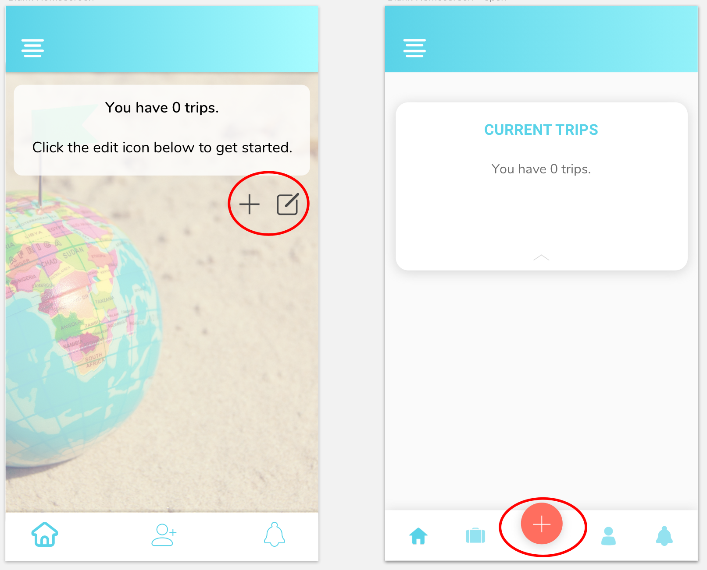
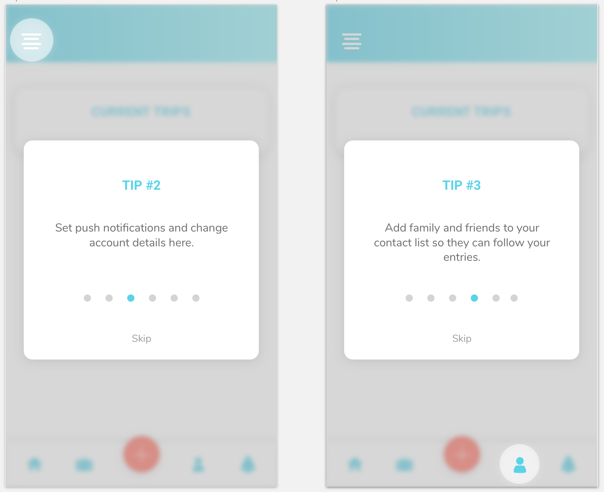

Vicarious is a mobile app that prompts users to provide brief updates about each day, increasing peace of mind for family and friends by helping them live vicariously through travelers’ experiences in a unique way.
view prototypeLogo, Style Guide, App & Landing Page Design, Responsive Landing Page
UX Design, Brand Identity, Visual Design
Sketch, Illustrator, Draw.io, Balsamiq, Usability Hub, InVision
Long-term solo travelers deal with the issue of ensuring family and friends they will survive their adventure around the world and constantly keep in touch while doing so.
The app addresses this problem by asking users simple daily questions, decreasing the time and effort it takes to update family and friends through traditional means, while also ensuring readers the traveler is safe on a constant basis.
The idea for vicarious came from personal experience I had while traveling solo for four months. I knew my family wanted to hear from me frequently, but I did not always have the time or strong wifi connection to do so. While reflecting on this experience, I knew that an app like vicarious would have helped me immensely.
The question was - would it help others in similar or different traveling circumstances?
The user survey provided several discoveries about long-term travelers:
said they had never used a collaborative travel journal app
said they do experience family and friends wanting to keep in touch with them while they travel
said the most prevalent reason why family and friends want to keep in touch is safety reasons
said they feel under pressure to keep in touch when they don’t have the time or wifi connection
The things travelers most want to update their loved ones on are:
Location/where traveler is staying
Traveler's next destination
Photos of travels
How the traveler is feeling/mood
Click here for a more in depth analysis
There are several apps on the market that help travelers keep in touch with family while abroad, but travelers may find difficulty in using the apps if they are not connected to strong wifi for long periods of time.
Additionally, there are several collaborative travel journal and planning apps that allow family and friends to follow a traveler’s itinerary or journals.
The problem is that these apps do not address the two issues vicarious tries to solve:
1. Keep in constant contact with loved onces about daily activity
2. Decrease the amount of time daily to achieve that communication
Threat: Users love that the app automatically tracks your location and all the places you visit throughout the day.
Opportunity: Trip summaries are specific to geographic locations, number of steps, distance, and photos, but no other trip details.
Threat: Beautiful, simple interface where friends on the same trip can collaborate on entries.
Opportunity: Focus is on writing open ended journal entries and uploading photos.
Threat: One of the most well known travel apps on the market.
Opportunity: Interface feels outdated, and there is no place to add other info aside from itinerary.
Click here for a more in depth SWOT analysis
Interviews were held with three potential users. The first two female users experiences and goals overlapped in several ways and exude the characteristics of likely typical users of the app. I luckily had the chance to interview a male user who does not experience the problems our typical users experience during traveling, but who still found that vicarious could be of use to him.
User stories were compiled to ensure a strong minimum viable product. User tasks that were prioritized were:
1) Create a new trip
2) Create daily entries about the trip
3) Add family and friends as contacts so they can follow along
Before wireframing, it was important to focus some time on creating user flows for the high priority user tasks for this MVP. Building out each of the user flows ensured that wireframing would be a simpler, quicker process.
From the very beginning, there were certain branding and design characteristics I knew that the company should be: bold, simple, trustworthy and fun.
To delve even deeper into the intricacies of the brand identity, I brainstormed through list making.
The word “vicarious” itself did not clearly display it was a travel app. Several sketches later, I ran preference tests with users and eventually came down to the two most popular - a location marker and a plane.
After additional iterations and preference tests, it was clear that users preferred the simple location marker with “vicarious” written underneath. It again was a perfect fit since it focuses on the part of travel that family and friends want to know about their traveler - where he or she is at all times.
The two most important styling pieces that would execute the brand identity (bold, simple, trustworthy, and fun) were the typeface and color choice.
A variety of bold blues and a constrasting salmon hue were chosen and would be used sparingly within the app. The typeface Nunito fit perfectly with the rounded map marker icon and provides a fresh feel to the app.
Click here for the full syle guide
#5AD3EB
#13ABC7
#84E1F2
#FF6E5F
I first sketched several iterations of low fidelity wireframes with pencil and paper, addressing each user flow and continuously editing the wireframes after three informal usabliity tests.
Wireframes were then developed and revised after a few informal user tests with three users. Two significant changes were made based on the feedback during the tests.
Next, I applied the branding elements to the digital wireframes to develop the high fidelity mockups and the initital prototype that would be used for the first round of user testing.
View all mockups in the prototype below:
view prototypeWith the first round prototype completed, I began testing users to evaluate the user interface and the crucial tasks that users WOULD need to complete in the app. There were a few key findings that influenced a second version of the prototype.
In order to provide stronger visual hierarchy and clarity, many updates were made to the visual aspects of the app after the first prototype.
Adding a trip and a daily entry are two of the highest priority user tasks in the app. In the early prototype, the icons to complete these actions were not clear based on initial usability tests. I updated the flow of the app in order to prioritize an “add” button front and center on the tab bar. It provides options to add a trip or daily entry.
A pain point mentioned by several users in the survey regarding other travel apps was that they were not straightforward and easy to use. During the first usability tests, users spent a good amount of time figuring out which icon was associated with which task. In order to provide more clarity and cut down on this time, I added several welcome screens and optional tips to better understand how to use the app before beginning.
This minimum viable product design successfully features a solution to major communication problems that solo travelers endure. During late testing, users easily navigated the app, and claimed that the features available could potentially ease the issues they deal with when communicating with friends and family while traveling.
Given more time, there are several things I would include in a more extensive prototype:
A crucial piece that led to the success of this design was returning to the early user survey and competitive research during the prototyping stages. All of the research provided context for why users needed more clarity across some pieces of the user interface. It taught me to keep research close by, even in late stages of refining the visual parts of an app.